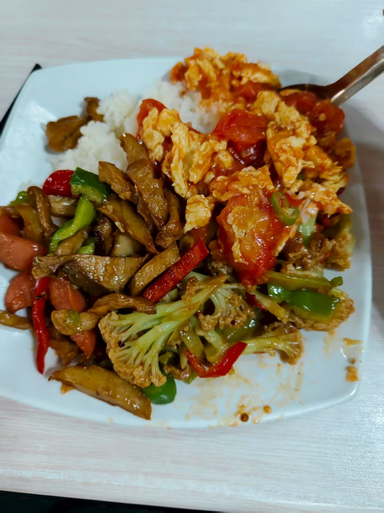

初入北科管庄校区
新生报到

刚到校门口时，第一感觉这是某个小区的大门，甚至更小，倒是衬得上面“北京科技大学管庄校区”几个字十分醒目。穿过大门，迎面便是一个小广场，迎新志愿者在四周忙活。这个时候大概是早上七点不到，各个学院的摊位都还在搬东西做准备。
我来的太早了，等了好长时间才等到迎新志愿者们准备好，之后便提交了材料，拿到了钥匙银行卡等。接着就是比较累的行李搬运和整理床铺时间，期间我趴桌子上睡了一会儿。果然累了就要休息。
忙活到中午，肚子饿了，没在地图上找到餐厅，遂下楼随便找找，于是在没走几步远的地方看到了第四食堂（回民餐厅）。走进餐厅，十分惊讶，虽预料到餐厅会很小，但没想到有那么小——只有一间教室那么大。柜台小，菜单却很大，菜品也很多，大部分都是拌饭和汤面。点了份自选菜盖浇饭，找了一个四周没人的座位，兀自吃了起来。一勺西红柿炒鸡蛋，几根木须炒肉，夹杂着炒的冒油的火腿肠，浇在一盘底米饭上，共16元。虽说贵了点，但我对这顿饭的感觉还不错，该有的的味道是有的，能看出厨师确实在做饭，而不仅仅是“出餐”。

吃饱喝足，我习惯性地拿起盘子想找餐具回收，站起来后却傻眼了。我刚进门的时候就觉得不对劲，这餐厅太小了，小到只有出餐柜台和座位，别的啥也没有。正当我犹豫不决时，老板的一声吆喝让我猛地回头，“同学们可以去里面吃”。果然我一扭头就看到了在不远处一个小小的门洞，里面还有一排排座位，以及餐具回收处，不过我急着回去，也就没细看里面的洞天。
今天还没过完，我的初步感受是管庄虽小，五脏俱全，乍看外表平平无奇甚至破旧，但里面的配套设施是完善的，要比天理好一些（可能是由于人少😁）。
目前我才呆了半天不到，流露的情感可能是新奇的余波，待我细细品味几天后再做详细的汇报。